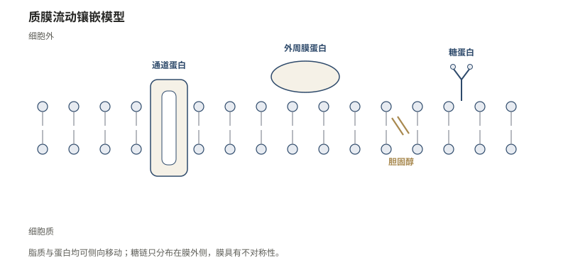
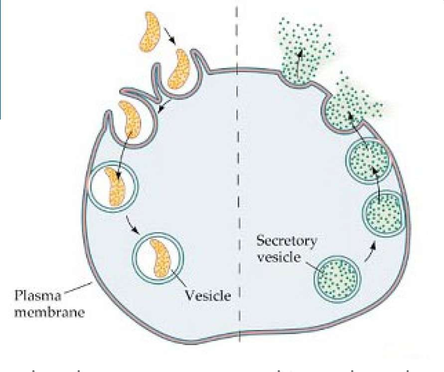
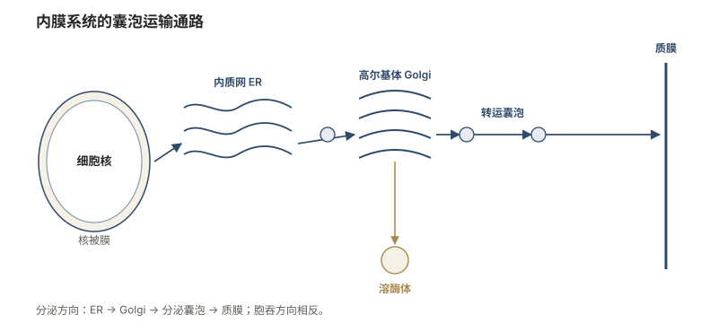

BIO103 · 第 4 章
内膜系统与膜运输
Endomembrane System & Membrane Transport Mechanisms
虚线下划线为术语；悬停查看中文、英文与释义，完整词典见“术语”。
本章目录
本章先界定内膜系统的组成与功能，再拆解质膜的脂质、固醇、糖类与蛋白，最后落到物质如何跨膜：扩散、泵、胞吞与胞吐，以及蛋白质如何在各区室之间被分选与运送。
本章要点
- 内膜系统是由质膜、核被膜、内质网、高尔基体、溶酶体、内体与转运囊泡组成的单一功能单位。
- 膜脂为两亲性分子，磷脂、鞘脂与糖脂的组合决定膜的包装方式与流动性。
- 胆固醇插入双层，高温时限制运动、低温时阻碍紧密堆积，起缓冲作用；脂筏是富集鞘脂与胆固醇的信号平台。
- 膜蛋白约占膜质量的 50%，执行运输、酶催化、识别、连接与锚定五类功能。
- 流动镶嵌模型由冷冻断裂技术与 Frye–Edidin 细胞融合实验支持。
- 静息电位约 −70 mV；Na⁺–K⁺ ATPase 每循环泵出 3 个 Na⁺、泵入 2 个 K⁺。
- 胞吞分吞噬、胞饮与受体介导三类；胞吐分组成型、调节型与溶酶体介导三类。
- 核孔运输依赖 NLS/NES 与 RanGTP；蛋白质进入细胞核不需要解折叠。
4.1 内膜系统的定义与组成
细胞内同时进行的多种过程必须被分隔，否则彼此干扰。讲义给出两种隔离策略：把酶装配成大型多组分复合物；或把代谢过程及其所需蛋白封闭在各自独立的膜性区室中。内膜系统属于后者。
内膜系统endomembrane system是一组膜构成的集合，并在功能与发育上构成一个整体；它们或直接相连，或通过囊泡运输间接相连并交换物质。其主要组分包括：质膜、核被膜、内质网、高尔基体、溶酶体、内体（endosomes）与转运囊泡（transport vesicles）。
“直接相连”指膜的连续性，例如核被膜与粗面内质网相通；“间接相连”指两个区室不共用膜，而靠囊泡出芽与融合交换内容物——这正是分泌途径与胞吞途径被视为“通路”的原因。
L5–6 p.1–3
4.2 质膜脂质：磷脂、鞘脂与糖脂
质膜厚约 8 nm，是动态屏障，把细胞与非生命环境分开；它维持细胞完整性，保持细胞质与细胞外液各自的化学组成，具选择透过性，参与细胞通讯，并为细胞识别提供分子基础。质膜的关键组分有四项：脂质（主要磷脂）、固醇（主要胆固醇）、碳水化合物与蛋白质。
膜脂有三类。磷酸甘油酯phosphoglycerides是磷脂的主要类别；鞘脂sphingolipids以鞘氨醇（sphingosine）为骨架，而非甘油；糖脂glycolipids以糖基取代磷酸基团。所有这些分子都是两亲性amphipathic的：既有亲水区域，又有疏水区域。
膜脂在两层中的分布并不均匀，例如鞘脂主要位于质膜的细胞外面（extracellular face）；不同脂质的组合影响堆积方式，从而决定膜流动性；脂质间吸引与排斥力的平衡驱动双分子层形成，该双层即细胞与外界之间的屏障。
L5–6 p.4–5
4.3 胆固醇、脂筏与糖被
胆固醇cholesterol是细胞膜中的主要固醇，只存在于真核细胞膜中。它也是两亲性的，可插入双层的内外两个小叶，最高达每个磷脂对应一个胆固醇。其作用为：降低脂质运动性；防止脂肪酸链结晶或发生不需要的相变；降低膜对小的水溶性分子的通透性；在不同温度下稳定膜流动性。
结构上，极性头基与磷脂头基对齐，中央区域变僵硬、更有序，下层区域仍较流动，从而在刚性与柔性间取得平衡。
脂筏lipid raft是膜内小而特化的平台，主要由外层（exoplasmic leaflet）的鞘脂与胆固醇构成，并与内层的磷脂、胆固醇相连。它比周围膜更有序、流动性更低，可作为聚集信号转导蛋白的平台，并参与维持稳态与多种病理过程。讲义指出，鞘脂代谢缺陷与阿尔茨海默病、帕金森病及多发性硬化相关。
膜碳水化合物形成糖被glycocalyx（cell coat），包括糖脂、跨膜糖蛋白、吸附糖蛋白与蛋白聚糖。其功能为：保护表面免受机械与化学损伤；作为识别分子；介导与其他细胞、毒素、病毒、抗体与细菌的识别。糖链短而有分支，少于 15 个糖单位，可与脂或（更常见）与蛋白结合；糖链差异决定血型。

绘图提示词
Clean vector cross-section of the plasma membrane: phospholipid bilayer with hydrophilic heads outward, cholesterol molecules intercalated between tails, integral membrane proteins embedded with fixed orientation, peripheral proteins attached to each surface, glycoprotein and glycolipid carbohydrate chains forming the glycocalyx on the extracellular face, and a small lipid raft region enriched in sphingolipids and cholesterol. Flat 2D, thin 1.5 px strokes, muted slate blue and warm grey palette, white background, English labels, no cartoon, no gradient, no shadow.
L5–6 p.6–8
4.4 膜蛋白：组织方式与功能
蛋白质约占膜质量的 50%，是流动镶嵌模型的核心。它可在内侧附着细胞骨架、在外侧附着细胞外基质，提供结构强度；膜的大部分特定功能由蛋白决定，不同细胞类型的特性也由此而来。
膜蛋白的排布是不对称的：两类蛋白在两层上的分布不相等。整合膜蛋白integral membrane protein嵌在脂双层中，取向固定，不会翻转（no flip-flop）；外周膜蛋白peripheral membrane protein结合在膜表面，而非嵌入其中。
膜蛋白有五类功能：膜运输（被动运输与耗能的主动运输，使细胞调节内环境）；酶活性（在表面催化关键反应）；细胞间识别（多为带糖链的糖蛋白，供免疫系统区分自我与非我，并引导发育）；细胞间连接（紧密连接、缝隙连接、桥粒）；附着（向内锚定骨架、向外锚定 ECM）。
L5–6 p.9–10
4.5 流动镶嵌模型的证据与膜流动性
支持流动镶嵌模型的证据有两项。冷冻断裂沿双分子层中央把膜劈开，暴露细胞外面与细胞质面，可直接看到嵌在膜中的蛋白颗粒。Frye & Edidin 实验把人细胞与小鼠细胞融合成异核体（heterokaryon），表面抗原在约 40 分钟内混合，证明膜蛋白能侧向移动。
膜分子靠较弱的疏水相互作用维系，故膜具流动性；流动性部分取决于不饱和脂肪酸的比例。影响因素有四组：
磷脂的侧向移动极快（约每秒 10⁷ 次），翻转（flip-flop）极罕见。不饱和脂肪酸的尾链有折角，使分子彼此分开，膜更流动；饱和脂肪酸的直链紧密堆积，膜更黏稠。温度升高流动性增加，降低则下降。动物细胞的胆固醇在高温时限制运动、防止过度流动，低温时阻碍紧密堆积、维持流动性。
L5–6 p.11–12
4.6 膜电位、离子分布与动作电位
典型人体细胞的静息膜电位约为 −70 mV，即细胞内侧相对外侧为负。相关定义如下：阳离子（cation，如 Na⁺、Ca²⁺、K⁺、Mg²⁺）与阴离子（anion，如 Cl⁻）；电学梯度electrical gradient是跨膜的电荷差；化学梯度chemical gradient是跨膜的溶质浓度差；电化学梯度electrochemical gradient是两者合并的效果。膜电位通过电学力与浓度差共同影响被动运输。
以肌细胞为例，细胞外与细胞内的离子浓度为：K⁺ 4 mM / 150 mM；Ca²⁺ 2.5 mM / 0.0001 mM；Na⁺ 145 mM / 20 mM。即 K⁺ 主要在细胞内，Na⁺ 与 Ca²⁺ 主要在细胞外。决定膜电位的两个主要因素是：细胞内多种蛋白带负电；膜对这些离子的通透性，而通透性取决于特定离子通道的可利用性。
动作电位action potential是细胞对刺激的响应：静息约 −70 mV；去极化时 Na⁺ 通道开放、Na⁺ 内流，电位升至约 +40 mV；复极化时 Na⁺ 通道关闭、K⁺ 通道开放，K⁺ 外流使电位回落；超极化时电位短暂比静息更负；随后是不应期。Na⁺–K⁺ ATPase 每循环泵出 3 个 Na⁺、泵入 2 个 K⁺，恢复并维持梯度。浦肯野细胞等可自发发放，频率随刺激改变。

L5–6 p.13–14
4.7 细胞外基质与跨膜运输
细胞外基质（ECM）由四类成分构成：蛋白聚糖结合阳离子与水，充当填充空间的成分；胶原纤维提供结构强度；纤连蛋白把 ECM 组分连接到细胞表面受体；整合素是跨膜蛋白，把 ECM 与细胞内的细胞骨架连接起来。ECM 的总体功能为支持、黏附、运动与调节。
选择透过性取决于分子与膜疏水核心的相互作用：疏水分子可自由穿过脂双层；亲水分子（如离子与葡萄糖）及大多数蛋白质需要膜运输蛋白协助。
简单扩散由随机分子运动驱动，净移动顺浓度梯度，疏水物质可直接穿膜，速率取决于浓度梯度、距离、分子大小、温度与膜表面积。协助扩散同样顺梯度、不需能量：通道蛋白形成孔道，载体蛋白结合特定溶质并改变构象；速率会饱和。主动运输逆浓度梯度、消耗 ATP，由载体蛋白（分子泵）完成，速率同样会饱和。
Na⁺–K⁺ 泵的循环：细胞质 Na⁺ 结合泵蛋白 → ATP 转移磷酸基使泵磷酸化 → 构象改变，排出 3 个 Na⁺ → 细胞外 K⁺ 结合，磷酸基释放 → 泵恢复原构象 → K⁺ 释放入细胞质，Na⁺ 位点重新可用。每循环净结果为一分子 ATP 换来 3 个 Na⁺ 外出、2 个 K⁺ 内入。
| 维度 | 简单扩散 | 协助扩散 | 主动运输 |
|---|---|---|---|
| 方向 | 顺浓度梯度 | 顺浓度梯度 | 逆浓度梯度 |
| 能量 | 不需要 | 不需要 | 需要（ATP） |
| 参与者 | 无（直接穿膜） | 通道或载体蛋白 | 载体蛋白（泵） |
| 是否饱和 | 不饱和 | 可饱和 | 可饱和 |
通道与载体的选择性机制不同：离子通道主要按大小与电荷区分，多数为门控，只在特定刺激下短暂开放；载体蛋白只让能嵌入其特定结合位点的分子或离子通过，一次转运一个，过程中发生构象改变。
L5–6 p.15–18
4.8 胞吞：吞噬、胞饮与受体介导
胞吞endocytosis是物质经膜包围的囊泡进入细胞的过程，分三型。
吞噬作用phagocytosis摄取直径大于 0.5 μm 的大颗粒：伪足伸出包围目标，膜闭合形成胞吞泡（phagocytic vacuole），内体内容物送入该泡，成熟为溶酶体后吞入物被分解。讲义以白细胞吞噬细菌为例：早期内体 → 晚期内体 → 含水解酶的成熟溶酶体。
胞饮作用pinocytosis即“细胞饮水”：细胞连同溶解分子一起摄入细胞外液液滴，属非特异运输；囊泡由膜内折并掐断形成。讲义澄清：并非“只取分子不取液体”，而是液体与溶解物一起被包裹进入。
受体介导的胞吞receptor-mediated endocytosis是特异、靶向的摄取，以 LDL 为例：LDL 结合位于网格蛋白包被小窝（clathrin-coated pits）的 LDL 受体；膜内陷成包被囊泡；脱包被（uncoating）后与早期内体融合；受体经转运囊泡出芽返回质膜重复使用；LDL 被送往溶酶体分解，释放游离胆固醇。其临床意义是高胆固醇血症hypercholesterolemia。

L5–6 p.19–21
4.9 胞吐与膜融合
胞吐exocytosis是物质经膜包围的囊泡从细胞释放的过程，分四步：囊泡靠近质膜；囊泡膜与质膜融合；融合处向细胞外开放；内容物排出，囊泡膜整合进质膜。典型例子为胰岛素分泌（胰腺细胞响应血糖升高）与神经递质释放。
胞吐与胞吞都依赖膜融合、都需要能量。胞吐负责毒素与废物排出、质膜修复、细胞通讯与分泌，分组成型、调节型与溶酶体介导三类；胞吞负责营养吸收、病原清除与清除衰老组分，分胞饮、吞噬与受体介导三类。
膜融合涉及 NSF（Soluble N-ethylmaleimide-sensitive factor）与 SNARE（NSF Attachment Protein Receptor）复合物两个蛋白家族。融合是磷脂双层的合并，是所有囊泡运输的最后一步，对蛋白与脂质转移、信号分子与受体运送至关重要；它还能重建细胞器——分裂时碎裂的细胞器正靠膜融合重新组装。
L5–6 p.22–24
4.10 核被膜与核孔运输
内核膜锚定在核纤层nuclear lamina上，后者是由 lamin 这类中间丝蛋白构成的网状结构。核纤层为染色体提供附着位点，帮助组织与排列遗传物质，并赋予细胞核结构稳定性与形状。
核孔复合体nuclear pore complex贯穿两层膜，通道直径约 20–40 nm。它是选择性屏障，主动运输大分子进出核；小分子可经核孔自由扩散；大分子上的核定位信号nuclear localization signal（NLS）指导其经核孔复合体被主动运输。关键一点：蛋白质进入细胞核时不被解折叠，这与进入线粒体等细胞器的方式不同。
核输入四步：带 NLS 的核蛋白在细胞质中与 importin-α、importin-β 结合成复合物；复合物经核孔进入核内；核内 RanGTP 结合 importin-β，使复合物解离并释放货物；importin 随 RanGTP 返回细胞质，GTP 水解后释放 RanGDP，importin 可重复使用。
核输出同样四步：待输出分子带核输出信号nuclear export signal（NES），在核内与 exportin 及 RanGTP 结合成三元复合物；复合物经核孔到细胞质；RanGTP 转为 RanGDP，复合物解离并释放货物；exportin 与 RanGDP 返回核内，核内 RCC1（Ran 鸟苷酸交换因子）把 RanGDP 转回 RanGTP。
L5–6 p.26–27
4.11 内质网：粗面与光面
粗面内质网rough ER由布满核糖体的扁平膜囊堆叠而成，占细胞总膜含量一半以上；从粗面到光面呈结构-功能极性过渡，并在核孔处与核被膜连续；内部腔（lumen）是与细胞质分隔的独立区室。功能为：膜上核糖体合成蛋白；对新生蛋白加糖链（糖基化）；生产新的膜材料。
粗面内质网中的蛋白质加工分四步：多肽合成在细胞质的核糖体上开始，并被引导进入 ER；多肽进入腔内折叠并接受糖链，形成糖蛋白；糖链进一步修饰加工；转运囊泡出芽，携带糖蛋白前往高尔基体。
光面内质网smooth ER的膜与粗面内质网连续，但没有核糖体，故呈“光滑”外观。其功能包括：生物合成——产生脂质、胆固醇、糖脂与糖原；生物转化——化学修饰物质，也进行糖类代谢；解毒——灭活药物与毒物，修饰后的物质被运出细胞，常在肝脏进一步处理。肌肉细胞的光面内质网特化为肌质网（sarcoplasmic reticulum），储存 Ca²⁺：释放触发收缩，回收使舒张。
L5–6 p.28–29
4.12 高尔基体、溶酶体、内体与蛋白质分选
高尔基体Golgi apparatus由扁平的膜囊（cisternae）堆叠而成，位于内质网附近。cis 面接收来自粗面与光面内质网、携带新合成蛋白与脂质的囊泡；medial 区进一步糖基化并修饰质膜成分；trans 面把分泌囊泡释放到质膜（分泌或膜更新）与溶酶体（消化酶）。囊泡在 cis 与 trans 间双向移动以便回收。其功能是修饰蛋白、糖类与磷脂，并把大分子分选、包装。
溶酶体lysosome是膜包围的细胞器，含水解酶，可分解蛋白、核酸、脂质与糖类；内部维持低 pH，使酶处于最适酸性条件。三条途径：细胞外消化——食物泡与溶酶体融合后内容物被分解；自噬（autophagy）——受损细胞器被包裹、降解并回收；生物合成——酶在粗面内质网合成、高尔基体加工、包装为初级溶酶体，开始消化后成熟为次级溶酶体。
内体endosome是所有真核细胞质中的膜包围囊泡，调控蛋白与脂质在质膜、反面高尔基网络（TGN）与溶酶体之间的运输，分早期、晚期与循环内体三类。胞吞途径为：质膜内陷并掐断形成胞吞囊泡 → 与早期内体（主要分选站）融合 → 成熟为晚期内体 → 经循环内体返回质膜，或被送往溶酶体降解。
分选信号把蛋白引向所需的细胞器，没有信号的蛋白永久留在细胞质。跨膜转运须经靶细胞器膜上的蛋白转位器，蛋白必须解折叠；囊泡运输则由转运囊泡携带，囊泡依靠细胞质表面的包被蛋白出芽形成。
分泌途径分两条：组成型分泌由所有细胞持续进行，并为质膜补充新合成的脂质与蛋白；调节型分泌见于特化细胞，蛋白在反面高尔基网络中被包装、浓缩并储存，仅在外信号（激素或神经递质）触发时释放。多数蛋白在内质网中经历共价修饰，ER 的大小受流经它的蛋白量调节。

绘图提示词
Clean vector pathway map of the endomembrane system: rough ER budding a transport vesicle to the cis face of the Golgi stack, progression through medial cisternae to the trans face, then vesicles sorting to the plasma membrane for exocytosis and to a lysosome; a separate endocytic route shows the plasma membrane invaginating into an early endosome, then a late endosome with arrows to recycling endosome and lysosome. Flat 2D, thin strokes, muted slate blue and warm grey, white background, English labels, no cartoon, no gradient, no shadow.
L5–6 p.30–35